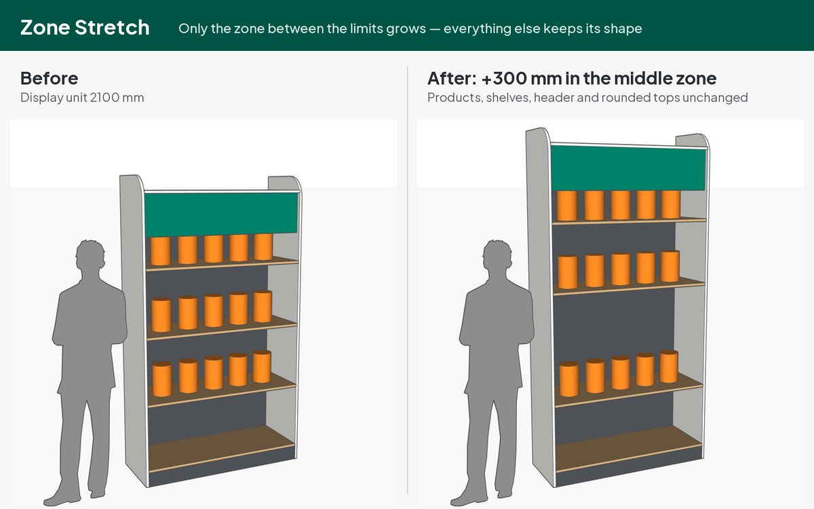

SketchUp Extensions by Andi DewantoExtension SketchUp oleh Andi Dewanto
Support, downloads and tutorials for Simple Bevel, MapEasy and Zone Stretch. Free · Windows & macOS · SketchUp 2021+. Each extension has its own website and repository.
Dukungan, unduhan, dan tutorial untuk Simple Bevel, MapEasy dan Zone Stretch. Gratis · Windows & macOS · SketchUp 2021+. Tiap extension punya situs dan repositori sendiri.
Simple Bevel
Round or chamfer selected edges in one step — positive radius = fillet, negative = chamfer. Outside and inside corners, chains of connected edges with mitre joints, a smart Pick Edge Chain selector, and 2D corner fillet / chamfer for flat faces. New in 1.5: English interface.
Membulatkan atau memotong miring edge terpilih dalam satu langkah — radius positif = fillet, negatif = chamfer. Sudut luar dan dalam, rantai edge bersambung dengan sambungan mitre, alat Pick Edge Chain, dan fillet / chamfer pojok 2D untuk face datar. Baru di 1.5: antarmuka berbahasa Inggris.


MapEasy
Fast texture mapping: Cylinder Wrap wraps an image around any cylinder (axis detected automatically); Face Fill fits an image to selected faces — Stretch, Cover or Contain, per face or spanned across folds and corners. New in 1.1: English interface.
Pemetaan tekstur cepat: Cylinder Wrap membungkus gambar ke silinder apa pun (sumbu terdeteksi otomatis); Face Fill memasang gambar pas ke face terpilih — Stretch, Cover, atau Contain, per face atau dibentang melewati lipatan dan sudut. Baru di 1.1: antarmuka berbahasa Inggris.


Zone Stretch
Make one part of a model longer or shorter — only between two limit planes — while everything outside keeps its exact shape. Pick a direction (red, green or blue plane), click limits A and B, then type the new length (480), a change (+200) or a shrink (-100). Works deep inside nested groups and components without exploding them; shared components stay shared.
Memanjangkan atau memendekkan satu bagian model — hanya di antara dua bidang batas — sementara bagian lain tetap utuh. Pilih arah (bidang merah, hijau atau biru), klik batas A dan B, lalu ketik panjang baru (480), penambahan (+200) atau pengurangan (-100). Bekerja di dalam grup dan komponen bersarang tanpa explode; komponen bersama tetap berbagi definisi.


InstallationInstalasi
- SketchUp: Extensions › Extension Manager › Install Extension… and choose the
.rbz. - The toolbar appears automatically (otherwise View › Toolbars).
- Each extension has a built-in tutorial: Extensions › [name] › About… › Open Tutorial.
- Di SketchUp: Extensions › Extension Manager › Install Extension… lalu pilih file
.rbz. - Toolbar muncul otomatis (jika tidak: View › Toolbars).
- Tiap extension punya tutorial bawaan: Extensions › [nama] › About… › Open Tutorial. Tutorial tersedia dalam bahasa Inggris dan Indonesia (tombol EN / ID).
FAQ
- An edge was skipped. The message names the reason — usually the radius is larger than the adjacent face, or several selected edges meet at one corner.
- The image is on the wrong side of a face. Right-click › Reverse Faces, then run Face Fill again.
- Zone Stretch changed only part of my model. Only the selected object stretches — group the parts (frame, header, shelves…) first to stretch them together.
- Interface language. The extensions use an English interface; the tutorials and this page are available in English and Indonesian.
- Uninstall. Extension Manager › select the extension › Uninstall.
- Ada edge yang dilewati. Pesannya menyebut alasannya — biasanya radius lebih besar dari face di sebelahnya, atau beberapa edge terpilih bertemu di satu pojok.
- Gambar menempel di sisi face yang salah. Klik kanan › Reverse Faces, lalu jalankan Face Fill lagi.
- Zone Stretch hanya mengubah sebagian model. Hanya objek terpilih yang ditarik — gabungkan dulu bagian-bagiannya (rangka, header, rak…) dalam satu grup.
- Bahasa antarmuka. Menu dan dialog extension memakai bahasa Inggris; tutorial dan halaman ini tersedia dalam bahasa Inggris dan Indonesia.
- Uninstall. Extension Manager › pilih extension › Uninstall.
Contact & bug reportsKontak & laporan bug
Buy me a coffee for IDR 10,000. That's less than a dollar. The plugin is free. The coffee is optional. My wife insisted on this button.